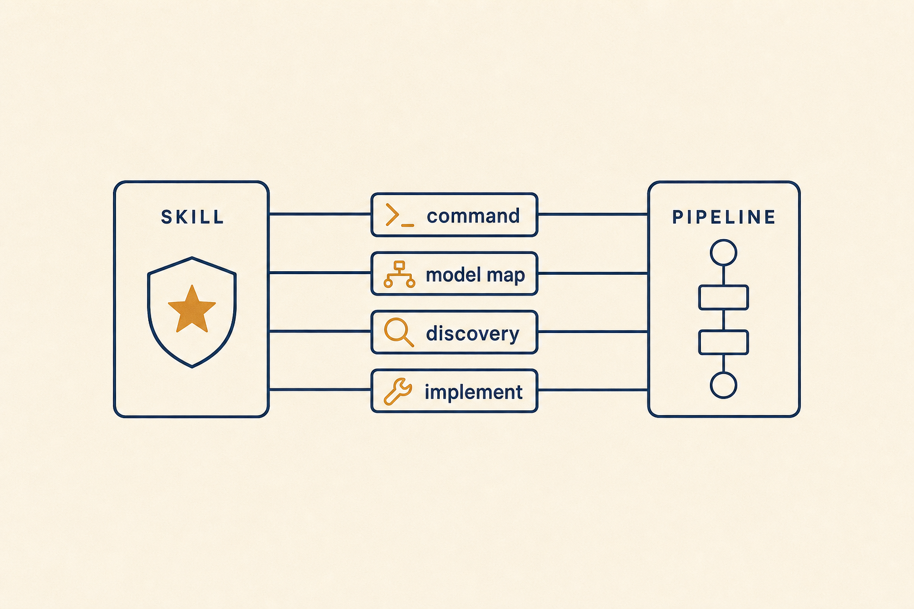
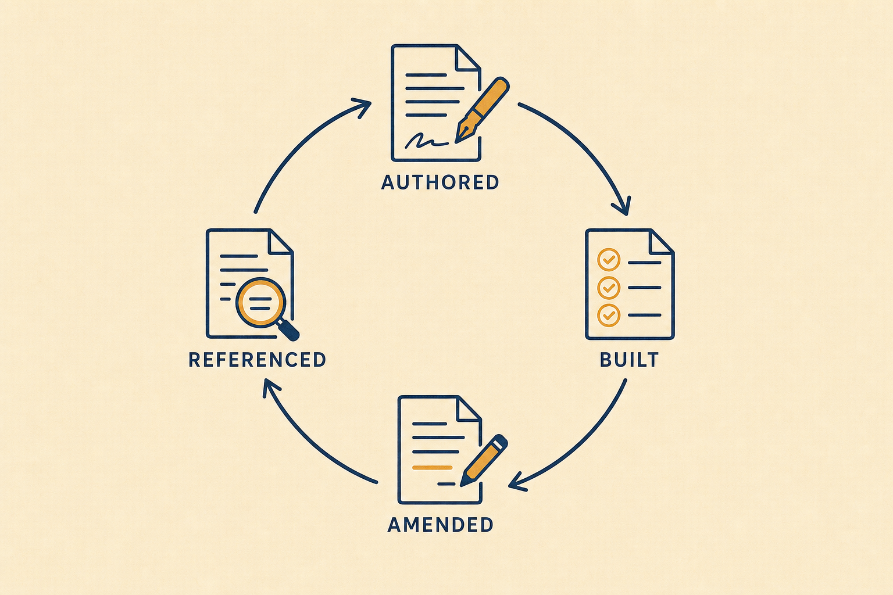

Plan: Incorporate planf3 — HTML Plans in specs/ Authored by the Heavy ADW Planner
specs/, feeding the build pipeline.Purpose
Bring the user-scope planf3 skill (~/.claude/skills/planf3/) into the repo_builder_elixir project as a first-class planning surface: a project-local /planf3 slash command that authors self-contained HTML plan documents into the project's specs/ directory, wired into the ADW harness so the planning step runs on the heavy model tier (heavy → opus under the claude+anthropic mapping) and so the resulting .html plan is discovered and consumed by the downstream /implement step.
Problem
Today the ADW planning step (build_plan in adws/adw_modules/workflow_ops.py) plans exclusively through the markdown-template commands /feature, /bug, and /chore. The richer planf3 format — self-contained HTML with metadata lifecycle, phase status markers, per-phase validation loops, embedded imagery, and an append-only amendment history — exists only as a user-scope skill, invoked manually and disconnected from the ADW pipeline. Three concrete gaps block adoption:
1) There is no project-local /planf3 command for the ADW harness to invoke (ADW steps are slash commands, not skills). 2) The harness is typed and gated: SlashCommand in adws/adw_modules/data_types.py:67 and SLASH_COMMAND_MODEL_MAP in adws/adw_modules/agent.py:37 don't know the command, so it can't be routed to the heavy tier. 3) Downstream discovery is markdown-only — find_spec_file (workflow_ops.py:583) filters specs/*.md in both its git-diff scan and its glob fallback, so an HTML plan would be invisible to the build/test/review steps.
/feature-family commands.Solution
Four thin, opt-in integrations, each touching the existing seam rather than inventing a new one: (1) author .claude/commands/planf3.md — a self-contained project command adapted from the skill (HTML template inline, specs/ output, ADW filename convention, Elixir/typed-standard planning guardrails inherited from /feature, lossless $ARGUMENTS contract, "return only the plan path" report). (2) register the command in the harness type system and model map with {"base": "main", "heavy": "heavy"} — identical to /feature — so model_set heavy runs plan on the heavy tier, and select it via a new ADW_PLAN_COMMAND environment override (default stays /feature; fully backwards compatible). (3) teach find_spec_file and /implement//implement_elixir to discover and execute .html plans, including flipping the plan's []/[wip]/[x] status markers in place per the skill's Build Plan workflow. (4) lock it in with pytest coverage, README/model-map docs, and a conditional-docs entry.

Relevant Files
Existing Files
- existing
~/.claude/skills/planf3/SKILL.md— source skill: plan template, variables, workflow table; adapted (not referenced at runtime) into the project command. - existing
~/.claude/skills/planf3/workflows/{create-plan,build-plan,update-plan,update-references,image-generation}.md— workflow semantics to fold into the project command and the implement-side consumption rules. - existing
~/.claude/skills/planf3/scripts/{generate_gpt_image.py,edit_gpt_image.py}— image generation scripts; copied into projectscripts/for the optional interactive image pass. - existing
.claude/commands/feature.md— the current planner command; source of the$ARGUMENTScontract, filename convention, Elixir guardrails, Tidewave guidance, and validation-command block. - existing
.claude/commands/implement.mdand.claude/commands/implement_elixir.md— plan consumers; must gain HTML-plan reading + status-marker updating rules. - existing
adws/adw_modules/data_types.py—SlashCommandliteral (line 67) gains"/planf3". - existing
adws/adw_modules/agent.py—SLASH_COMMAND_MODEL_MAP(line 37) gains the heavy-tier mapping for/planf3. - existing
adws/adw_modules/workflow_ops.py— plan-command selection nearLOCAL_ISSUE_CLASS(line 740) andfind_spec_file(line 583) dual-format discovery. - existing
adws/adw_tests/test_model_selection.py— existing model-selection tests; extend for/planf3. - existing
adws/README.md— model-selection docs (lines ~773–826); document the new command andADW_PLAN_COMMAND. - existing
lib/repo_builder/settings.ex— soleapp_settingsRepo caller; gains theplanf3_image_placeholders?getter/setter (Phase 5). - existing
lib/repo_builder_web/components/console/settings_components.ex+lib/repo_builder_web/live/console_live.ex— tabbed settings modal and its event handlers; gain the placeholder toggle on the General tab (Phase 5). - existing
lib/repo_builder/secrets.ex+lib/repo_builder/session/server.ex— encrypted vault (resolve_env/1,resolve_platform_env/0) and the OS-child env merge seam (server.ex:293) wherePLANF3_IMAGESis injected (Phase 5; no vault code changes expected). - existing
.claude/commands/conditional_docs.md— triage router; add an entry pointing planf3-related tasks at the command + this spec.
New Files
- new
.claude/commands/planf3.md— the self-contained project planning command (HTML template inline). - new
scripts/generate_gpt_image.pyandscripts/edit_gpt_image.py— copied from the skill so the interactive image pass runs from the repo root (headless ADW runs skip images entirely). - new
ai_docs/planf3/{build-plan,update-plan,update-references,image-generation}.md— vendored lifecycle workflows, rewritten against project paths; the repo's single source of truth for planf3 semantics. - new
specs/.planf3-assets/placeholders/{hero,problem,solution,phase,notes}.png— stock placeholder images embedded by default in ADW-authored plans, avoiding per-plan OpenAI image spend; seeded from this plan's already-generated image set. - new
adws/adw_tests/test_find_spec_file.py— pytest coverage for dual-format (.md/.html) spec discovery (or extend an existing harness test module if one already coversfind_spec_file). - new
test/repo_builder_web/live/test_planf3_placeholder_setting_test.exs— LiveViewTest for the settings-modal toggle, default-on state, and the missing-key warning (Phase 5).
Implementation Phases
IMPORTANT: Execute every phase and task step by step, in order, top to bottom.
Status markers: [] idle · [wip] in progress · [x] complete · [f] failed. All start as []; the Build Plan workflow updates them as it works.
[x] Phase 1: Project-local /planf3 planning command
Adapt the user-scope skill into .claude/commands/planf3.md — a single self-contained command file the ADW harness can invoke as a slash command. It merges the planf3 HTML plan template with the battle-tested contracts of /feature.
Hard requirement (zero ~/.claude dependency): the user-scope skill at ~/.claude/skills/planf3/ is source material only, consulted once while authoring this phase. Everything the command needs at runtime — the HTML template, the Create/Build/Update/Update-References workflow rules, the image-generation instructions, and the image scripts — is vendored into this repository. After this phase, deleting ~/.claude/skills/planf3/ (or running on a machine that never had it) must not change ADW behaviour in any way.
1.1 Author .claude/commands/planf3.md
[x]Frontmatter:command: planf3,version: 1.0.0, description "HTML-first implementation plan into specs/, planf3 format".[x]Bind the whole input toREQUEST: $ARGUMENTSand copy/feature's lossless argument contract verbatim (JSON issue payload →number/title/body/adw_id; freeform string otherwise; never positional$1/$2/$3; STOP on empty/garbled input).[x]Output contract: write the plan tospecs/issue-{issue_number}-adw-{adw_id}-sdlc_planner-{descriptive-name}.html— same stem convention as/featuresofind_spec_file's branch-name glob fallback (specs/issue-{n}-adw-{id}*) keeps working; images directory (if ever filled) is the same stem without.html.[x]Inline the full planf3 HTML## Plan Template(metadata header, hero/problem/solution figures, Relevant Files with existing/new tags, phases with[]status markers and per-phase Testing Strategy + 🔁 loop, global Validation Commands, Notes, Amendments) including the single self-contained<style>block; instruct "replace every{{...}}, repeat<!-- repeat -->blocks, leave no template token behind".[x]Fold in/feature's project guardrails as planning Instructions: readBUILD_PROMPT.md/README.mdfirst, typed-Elixir standard (§3), context-module DB access (§8), LiveViewTest task for UI work (§9), Tidewave-first research/validation,conditional_docs.mdcheck, and the standard five-command mix validation gate as the default global Validation Commands block.[x]Image policy (three tiers, cheapest first): default — fill every{{...IMAGE}}slot with a stock placeholder from the repo'sspecs/.planf3-assets/placeholders/library (zero API cost, keeps plans visually complete), with thealttext andfigcaptionstill describing the intended bespoke subject; opt-out — leave slots as HTML comment placeholders when even stock images are unwanted; generate — bespoke OpenAI generation viascripts/generate_gpt_image.py, requiringOPENAI_API_KEYin the environment.[x]Env contract: the command readsPLANF3_IMAGES—placeholders(default when unset),none, orgenerate.generatewithout anOPENAI_API_KEYin the env degrades toplaceholderswith a note in the plan's Amendments — never a failed run. The platform sets this variable from the console setting (Phase 5); manual/interactive runs can set it directly.[x]Metadata population rule:created= now (ISO),agent name=sdlc_planner,session id=adw_id,back refs= issue/prior specs consulted; all list fields append-only.[x]Report contract (load-bearing for the harness): "Return exclusively the path to the plan file created and nothing else" —workflow_opsparses this output intostate.plan_file.
1.2 Vendor the full skill into the repo (no ~/.claude references)
[x]Copygenerate_gpt_image.pyandedit_gpt_image.pyfrom the skill'sscripts/into projectscripts/unchanged (one-time copy; they run viauv run, needOPENAI_API_KEY).[x]Vendor the skill's four lifecycle workflows (Create / Build / Update Plan / Update References + Image Generation) as project docs underai_docs/planf3/, rewritten to reference project paths (scripts/…,specs/…) only..claude/commands/planf3.mdinlines the Create workflow itself and points atai_docs/planf3/for the rest.[x]Sweep every authored file for~/.claude,$HOME/.claude, or/home/*/.claudereferences — none may remain outside of provenance comments ("adapted from the user-scope planf3 skill").[x]Isolation check:*_isoADWs run in fresh worktrees — confirm the command and its vendored docs resolve entirely from the repo checkout (relative paths from the worktree root).
1.3 Stock placeholder image library (save OpenAI image costs)
[x]Createspecs/.planf3-assets/placeholders/with five generic, identity-matched images —hero.png,problem.png,solution.png,phase.png,notes.png— one per template slot kind. Seed it at zero cost by copying the five images already generated forspecs/planf3-html-plans-for-heavy-adw-planner/(they follow the paper/ink/amber identity); replace with purpose-drawn generic versions later if desired.[x]Placeholders live underspecs/deliberately: plans are written tospecs/*.html, so the relative embed is stable —<img src=".planf3-assets/placeholders/hero.png" …>— and survives worktree moves and repo clones.[x]In.claude/commands/planf3.md, map each slot kind to its stock file (hero→hero, problem→problem, solution→solution, any phase→phase, notes/questionables→notes) and require aclass="placeholder"on stock<img>tags plus a one-line figcaption suffix "(stock placeholder)" so bespoke and stock images are distinguishable at a glance and greppable for later upgrade.[x]Document inai_docs/planf3/image-generation.md(vendored copy) that the Update workflow may upgrade anyclass="placeholder"image to a bespoke OpenAI render on request — swap thesrc, drop the class, keep the figure.
1.4 Testing Strategy
Static validation of the command file — the command is prose+template, so validation is structural: the template must be complete, self-contained, and free of leftover tokens.
[x]grep -c '{{' .claude/commands/planf3.md— template tokens exist only inside the fenced## Plan Formatblock (they are the template, not leftovers).[x]grep -n 'sdlc_planner' .claude/commands/planf3.md— filename convention present and matches/feature's stem shape.[x]uv run scripts/generate_gpt_image.py --help(or a 1-image smoke run) — copied script executes from the repo root.[x]grep -rn '\.claude/skills/planf3\|~/.claude\|\$HOME/.claude' .claude/commands/planf3.md ai_docs/planf3/ scripts/generate_gpt_image.py scripts/edit_gpt_image.py— zero runtime references to the machine's~/.claude(provenance comments excepted).[x]ls specs/.planf3-assets/placeholders/{hero,problem,solution,phase,notes}.png— all five stock placeholders present.
[x] Phase 2: ADW harness wiring — heavy-tier routing + opt-in plan command
Register /planf3 in the typed harness so it is a legal, heavy-capable ADW step, and add an opt-in switch that routes the planning step through it without disturbing issue classification or branch naming.

ADW_PLAN_COMMAND=/planf3 reroutes only the plan step; classification and branch naming keep using the /chore|/bug|/feature class.2.1 Type + model-map registration
[x]adws/adw_modules/data_types.py: add"/planf3"to theSlashCommandliteral (line ~67). Do NOT touchIssueClassSlashCommand— classification stays/chore|/bug|/feature.[x]adws/adw_modules/agent.py: add"/planf3": {"base": "main", "heavy": "heavy"}toSLASH_COMMAND_MODEL_MAP— identical tiering to/feature, somodel_set heavyresolves the planner to the heavy tier (opus on claude+anthropic).
2.2 Opt-in plan-command selection
[x]adws/adw_modules/workflow_ops.py: introduceresolve_plan_command(issue_class) -> SlashCommandnext toLOCAL_ISSUE_CLASS(line ~740): returnsos.environ.get("ADW_PLAN_COMMAND")when set to a registered plan-capable command (/planf3or the class commands), else the classifiedissue_class. Validate the env value againstSLASH_COMMAND_MODEL_MAP; on an unknown value, log a warning and fall back — never crash a run over a typo.[x]Route everybuild_plan(issue, command=…)call site (GitHub-backed and*_local_isopaths) throughresolve_plan_command;generate_branch_namekeeps receiving the rawissue_classso branch names stayfeature/…-shaped.[x]Confirm the plan-step output parsing already stores the reported path intostate.plan_fileregardless of extension (it should — the report contract is "path only"); fix if any.mdassumption exists on that path.
2.3 Dual-format spec discovery
[x]find_spec_file(workflow_ops.py:583): change the git-diff filter tof.startswith("specs/") and f.endswith((".md", ".html")).[x]Same function, glob fallback: search bothspecs/issue-{n}-adw-{id}*.mdand…*.html; if both match, prefer the one matchingstate.plan_file, else prefer.html(the planf3 plan is the primary artifact when present).[x]Exclude the plan's sibling image directory from discovery (only files, extensions checked, so this is already safe — assert it in the test).
2.4 Testing Strategy
Pytest over the harness modules — pure-function coverage for tier resolution, env-override resolution, and dual-format discovery (tmp git repo fixture for the diff/glob paths, monkeypatched env).
[x]cd adws && uv run pytest adw_tests/test_model_selection.py -q— extended cases:/planf3resolvesmainunderbaseandheavyunderheavy.[x]cd adws && uv run pytest adw_tests/test_find_spec_file.py -q—.htmlfound via state, via git diff, via glob;.mdbehaviour unchanged; unknownADW_PLAN_COMMANDfalls back with a warning.[x]cd adws && uv run pytest adw_tests/ -q— zero regressions across the full harness suite (includes the generated-ADW drift gate).
[x] Phase 3: HTML plan consumption — /implement and /implement_elixir
Teach the two implementor commands to execute planf3 HTML plans with the skill's Build Plan semantics, while keeping markdown plans working exactly as today.
3.1 Extend the implementor commands
[x]In.claude/commands/implement.mdand.claude/commands/implement_elixir.md, add an "HTML plans (planf3 format)" subsection: whenPATH_TO_PLANends in.html, the plan's structure is<section id="phases">(ordered.phaseblocks with checklists) and<section id="validation">(global gate) — execute phases top-to-bottom, honouring each phase's Testing Strategy 🔁 loop before moving on.[x]Status-marker protocol (from the skill's Build Plan workflow): before starting a phase/task, Edit its<code class="status">[]</code>to[wip]; on completion[x]; on an impossible step[f]plus a one-line reason appended to the plan's Amendments section. The plan file is the live progress ledger.[x]Keep the existing markdown path untouched and first in the prose (it remains the default for/feature-authored plans).
3.2 Testing Strategy
Command files are prose contracts — validate by a dry-run exercise: hand /implement a tiny fixture HTML plan (one phase, one no-op task, validation command true) in a scratch worktree and confirm marker flipping + gate execution. This is a manual/agentic check, not CI.
[x]grep -n 'html' .claude/commands/implement.md .claude/commands/implement_elixir.md— both commands document the HTML path and marker protocol.[x]Fixture dry-run: markers in the fixture plan progress[]→[wip]→[x]and the global validation checklist gets checked.
[x] Phase 4: Documentation, discovery surfaces, and end-to-end proof
Make the new planner discoverable (docs, conditional-docs router, console ADW builder) and prove the whole path with one real heavy-tier local run.
4.1 Documentation
[]adws/README.md: add/planf3to the model-map table (base→main, heavy→heavy/opus), documentADW_PLAN_COMMANDunder the env-var section, and add a short "HTML plans (planf3)" subsection covering output location (specs/*.html) and consumption.[].claude/commands/conditional_docs.md: add a routing entry — tasks touching planf3/HTML plans load.claude/commands/planf3.mdand this spec.
4.2 Console ADW-builder surface
[]Verify the ADW builder step picker (prompt-steps discovery over.claude/commands/inlib/repo_builder_web/live/console_live/adw_builder_panel.ex/shared.ex) lists/planf3automatically; if the picker filters by an allowlist, add the command to it.[]If any Elixir file changes: run the full mix green gate (compile, format, credo, test, dialyzer per project standard).
4.3 End-to-end heavy run
[]Run a plan-only local ADW:ADW_PLAN_COMMAND=/planf3+model_set heavythroughadws/adw_plan_local_iso.pywith a small real prompt.[]Assert: run log shows the plan step resolved to the heavy tier; aspecs/issue-…-sdlc_planner-….htmlfile exists in the worktree;state.plan_filepoints at it; the HTML contains no leftover{{…}}tokens; image slots are filled with stock placeholders (class="placeholder",src=".planf3-assets/placeholders/…") and no OpenAI call was made.[]Chain check:find_spec_file(via the build step ofadw_plan_build_local_iso.py, or a direct unit call against the worktree) locates the.htmlplan.
4.4 Testing Strategy
The end-to-end run above is the acceptance test; back it with the repeatable command-line gate.
[]cd adws && uv run pytest adw_tests/ -q— full harness suite green after doc/code changes.[]mix test --warnings-as-errors— only required if 4.2 touched Elixir; zero regressions.
[] Phase 5: Console setting — "Plan images: use placeholders" toggle (default ON)
Surface the image policy as an operator setting in the console Settings modal. Ticked (default): planf3 embeds stock placeholders and never spends OpenAI tokens. Unticked: planf3 generates bespoke images, with OPENAI_API_KEY resolved just-in-time from the secrets vault — project-scoped secret first, platform-scoped secret as fallback.
5.1 Settings context (lib/repo_builder/settings.ex)
[]Addplanf3_image_placeholders?/0andput_planf3_image_placeholders/1toRepoBuilder.Settings(the soleapp_settingsRepo caller), following the existing get/put pattern; missing row ⇒true— placeholders are the default without any migration or seed.[]Full typed treatment per the project standard:@specon both functions, boolean-only changeset validation,{:ok, _} | {:error, changeset}on the write path.
5.2 Settings modal UI (settings_components.ex + ConsoleLive)
[]Add a "Plan images: use placeholders (no OpenAI cost)" toggle to the General tab of the settings modal (lib/repo_builder_web/components/console/settings_components.ex), reusing the existing labeled-field + toggle-event pattern; checked state reads the Phase 5.1 getter, flips via a newtoggle_planf3_placeholdersevent handled inConsoleLive.[]Helper text under the toggle: "Unticked: planf3 generates bespoke plan images with OpenAI — requires an OPENAI_API_KEY secret (project or platform scope) in the Secrets section." When unticked andSecrets.list_names/1shows noOPENAI_API_KEYin either scope, render an inline amber warning (masked names only — never values).
5.3 Env injection at the ADW launch seam
[]Where the platform builds the OS-child environment for ADW/worker processes (the vault merge atlib/repo_builder/session/server.ex:293—Secrets.resolve_platform_env/0merged underSecrets.resolve_env(project_id)), additionally setPLANF3_IMAGES=placeholderswhen the setting is ticked, elsePLANF3_IMAGES=generate. The key itself needs no new code: anOPENAI_API_KEYsecret deposited in either vault already reaches the child env via the existing merge (project overrides platform).[]Honour the erlexec env-replace gotcha (children get a replaced env, not an inherited one): addPLANF3_IMAGESinside the same env-construction path, not viaSystem.put_env.[]Fail-safe stays in the command (Phase 1's env contract):generatewithout a resolvable key degrades to placeholders and records an Amendment note in the produced plan — a missing secret must never fail a plan run.
5.4 Testing Strategy
ExUnit for the context, Phoenix.LiveViewTest for the modal toggle, and a seam test asserting the child-env contract — all Postgres-backed via the standard test cases.
[]mix test test/repo_builder/settings_test.exs— getter defaults totruewith no row; put/get round-trips; non-boolean rejected.[]mix test test/repo_builder_web/live/test_planf3_placeholder_setting_test.exs— new LiveViewTest: open settings modal, General tab shows the toggle ticked by default; untick flips the persisted setting; missing-key warning renders when noOPENAI_API_KEYsecret exists in either scope.[]Seam test — with setting ticked the built child env carriesPLANF3_IMAGES=placeholders; unticked plus a vaultOPENAI_API_KEYcarriesPLANF3_IMAGES=generateand the decrypted key; project secret wins over platform secret.[]Full green gate:mix compile --warnings-as-errors && mix format --check-formatted && mix credo --strict && mix test --warnings-as-errors(+mix dialyzer).
Validation Commands
Execute these commands to validate the entire plan is complete:
[]test -f .claude/commands/planf3.md && test -f scripts/generate_gpt_image.py && test -d ai_docs/planf3 && test -d specs/.planf3-assets/placeholders— command, image scripts, vendored workflows, and stock placeholder library are all in the repo.[]grep -rn '~/.claude\|\$HOME/.claude\|skills/planf3' .claude/commands/planf3.md ai_docs/planf3/ scripts/generate_gpt_image.py scripts/edit_gpt_image.py adws/adw_modules/— no runtime dependency on the machine's~/.claudeanywhere in the integration.[]grep -n '"/planf3"' adws/adw_modules/data_types.py adws/adw_modules/agent.py— type literal and heavy model map registered.[]grep -n 'ADW_PLAN_COMMAND' adws/adw_modules/workflow_ops.py adws/README.md— opt-in switch implemented and documented.[]grep -n '\.html' adws/adw_modules/workflow_ops.py—find_spec_filediscovers HTML specs.[]cd adws && uv run pytest adw_tests/ -q— full ADW harness suite passes.[]ADW_PLAN_COMMAND=/planf3heavy plan-only local run produces a validspecs/*.htmlplan discovered byfind_spec_file— end-to-end proof.[]mix test --warnings-as-errors— green gate holds (mandatory: Phase 5 changes Settings, ConsoleLive, and the session env seam).[]Settings round-trip: toggle unticked in the console + anOPENAI_API_KEYsecret in either vault scope ⇒ a planf3 run generates bespoke images; toggle re-ticked ⇒ the next run embeds stock placeholders with zero OpenAI calls.
Questionables
"Heavy agent" is interpreted as the ADW heavy model tier — correct?
The request says the plan document should be "used by the heavy agent". The only "heavy" concept in this codebase is the ADW model tiering (ModelTier = fast|main|heavy, ModelSet = base|heavy; claude+anthropic resolves heavy → opus). This plan therefore wires /planf3 so that under model_set heavy the planner runs on the heavy tier, and the produced plan is consumed by /implement — which is also heavy-mapped ("/implement": {"heavy": "heavy"}). If "heavy agent" instead meant a specific orchestrator worker category (Settings roster fast/main/heavy/leader in lib/repo_builder/settings.ex), an amendment should add a Forge/orchestrator consumption path — the specs/ output location makes that a small follow-up.
Opt-in env switch vs. replacing /feature outright
Chosen: ADW_PLAN_COMMAND env override, default unchanged (/feature). Rationale: every existing ADW combo, test fixture, and the console builder assume the markdown planners; an opt-in switch lets planf3 be exercised on real runs and promoted to default later by flipping one constant, with zero risk to in-flight workflows. Revisit after a few successful heavy runs.
Images in ADW-authored plans default to stock placeholders, never OpenAI
Headless ADW planning fills {{...IMAGE}} slots from the repo's stock library at specs/.planf3-assets/placeholders/ — zero API cost, zero network dependency, and the plan still renders as a complete document. Bespoke OpenAI generation (needs OPENAI_API_KEY, ~1–2 min and paid tokens per image) is opt-in only, via an interactive image pass that upgrades class="placeholder" images in place. The alt/figcaption always describe the intended bespoke subject, so an upgrade never loses the design intent.
OPENAI_API_KEY resolution order: project secret over platform secret
The session server already merges Secrets.resolve_platform_env() under Secrets.resolve_env(project_id), so a project-scoped OPENAI_API_KEY wins over a platform-scoped one — matching the user's "project repo or the platform repo" framing with the more specific scope taking precedence. Phase 5 rides that existing merge rather than adding a second resolution path; decryption stays just-in-time at the OS-child boundary and the UI only ever sees masked names via list_names/1.
Dual-format specs directory — does anything else assume specs/*.md?
Known consumers audited: find_spec_file (fixed in Phase 2.3), /implement//implement_elixir (fixed in Phase 3), and the review/test steps which receive the plan path from state rather than scanning. specs/ already contains hand-authored .html plans (e.g. the audit roadmap), so tooling encountering HTML there is not new. Phase 4's end-to-end run is the safety net; any missed .md assumption found there gets fixed inside that phase's loop.
Notes
Why a command, not a project skill
The ADW harness invokes steps as slash commands (AgentTemplateRequest.slash_command → typed SlashCommand literal → model map). Skills are an interactive-session concept the harness never touches. So the integration surface is .claude/commands/planf3.md, self-contained, with the remaining lifecycle workflows vendored under ai_docs/planf3/ — an ADW worktree (or a fresh clone on another machine) must not depend on ~/.claude being present at all. The user-scope skill was the one-time source of the template; after vendoring, the repo copies are authoritative and evolve independently. If the user-scope skill improves later, changes are ported in deliberately, never referenced live.
Model-routing map
| Command | base | heavy | Role |
|---|---|---|---|
/planf3 (new) | main | heavy (opus) | Authors the HTML plan into specs/ |
/feature · /bug · /chore | main | heavy | Default markdown planners (unchanged) |
/implement | main | heavy | Consumes the plan (md or html) |
Dependencies & environment
No new libraries. uv already drives the ADW harness; the copied image scripts declare their own inline deps and need OPENAI_API_KEY only on the interactive path. No Ecto/OTP/runtime code changes are required (the console builder check in 4.2 is expected to be verification-only, since the step picker discovers .claude/commands/ dynamically).
Rejected approaches
Replace the markdown Plan Format inside /feature with HTML — rejected: destroys backwards compatibility with every existing spec, test fixture, and the review step's expectations in one move. Symlink ~/.claude/skills/planf3 into the project — rejected: worktree isolation (*_iso ADWs run in fresh worktrees) and machine portability both break on out-of-repo references. Add /planf3 as a fourth issue class — rejected: classification answers "what kind of change is this", not "which template writes the plan"; conflating them would force branch-naming and review heuristics to learn a non-class.
Future work
Once heavy runs prove out: (1) flip the default plan command to /planf3; (2) wire the skill's Update References workflow into the ADW commit step so commits/modified metadata self-append; (3) surface HTML plans in the console (LiveView iframe or link from run detail — specs/ is already served nowhere, so a static plug or dev-only route would be needed); (4) let the Forge/orchestrator heavy worker consume planf3 plans as workstream specs.

Amendments
2026-07-04T09:40:00+01:00 — Zero-dependency requirement: nothing may reference the machine's ~/.claude
User directive: the incorporated planf3 must not depend on the planf3 command/skill living in the computer's .claude directories. Phase 1 was retitled "Vendor the full skill into the repo" and extended: the four lifecycle workflows are vendored to ai_docs/planf3/ (new files added), a ~/.claude-reference sweep was added to Phase 1's testing strategy and to the global Validation Commands, and the Notes section now states the repo copies are authoritative after the one-time port. The user-scope skill remains provenance only.
2026-07-04T10:05:00+01:00 — Stock placeholder image library replaces default OpenAI generation
User directive (applies to the repo-vendored planf3, not the user-scope skill): ship placeholder images in the platform repo to save OpenAI image costs. Added task 1.3 creating specs/.planf3-assets/placeholders/ (five slot-kind images — hero/problem/solution/phase/notes — seeded free of charge from this plan's already-generated set). The command's image policy became three-tiered: stock placeholders by default (marked class="placeholder", "(stock placeholder)" figcaption suffix), comment-only opt-out, bespoke OpenAI opt-in that upgrades placeholders in place. Phase 4's end-to-end assertions, the New Files list, the images Questionable, and the global Validation Commands were updated to match; former task 1.3 (Testing Strategy) renumbered to 1.4.
2026-07-04T10:30:00+01:00 — Console setting: "Plan images: use placeholders" toggle (default ON) backed by the secrets vault
User directive: the placeholder behaviour should be a settings-modal toggle, ticked by default; when unticked, planf3 may generate images using an OPENAI_API_KEY stored in the Secrets section at project or platform scope. Added Phase 5: Settings.planf3_image_placeholders?/0 (missing row ⇒ true), a General-tab toggle with a missing-key warning driven by Secrets.list_names/1, and PLANF3_IMAGES=placeholders|generate injected at the existing vault-merge env seam (session/server.ex:293, project secret over platform secret, erlexec env-replace respected). Phase 1's image policy gained the PLANF3_IMAGES env contract with a degrade-to-placeholders fail-safe. Relevant/New Files, a key-precedence Questionable, and the global Validation Commands (mix green gate now mandatory, plus a settings round-trip check) were updated to match.